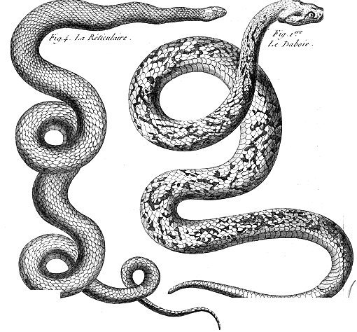
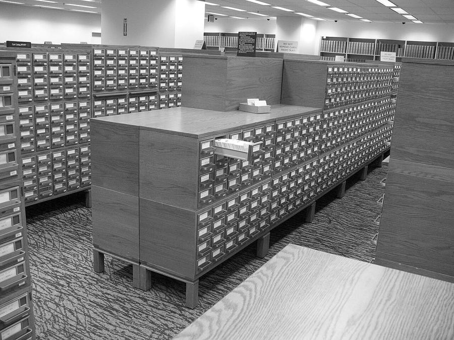
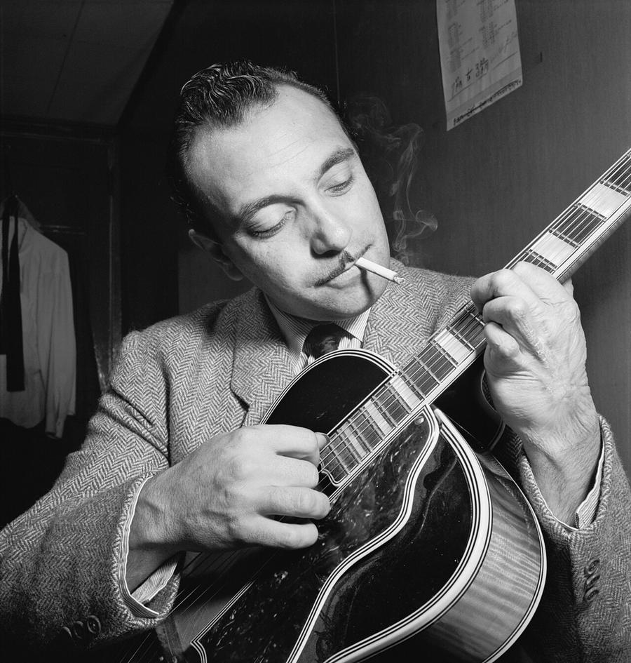
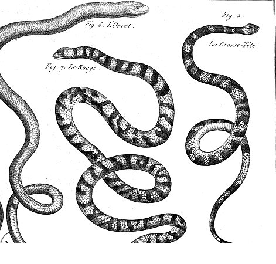

Список задач
Добавлять, удалять и отмечать дела: самый простой настоящий сайт. Пошаговая инструкция.

Бесплатный учебный сайт для тех, кто никогда не программировал. Вы выучите основы Python, простого языка программирования, и шаг за шагом соберёте свой сайт.
name = "Аня"
print("Привет,", name)Это настоящая программа на Python. Она работает прямо здесь и пишет на этой странице.
Вы уже начали. Вот где вы остановились.
7уроков

Вы начинаете с одной строки кода и нажимаете кнопку. Первые уроки идут прямо в браузере, поэтому ставить ничего не нужно, а ошибка ничего не сломает. Затем вы узнаёте, как сайт устроен изнутри: кто принимает ваш запрос, где лежат данные и откуда берётся страница. После этого вы собираете свой первый сайт, список задач, по готовой инструкции и выкладываете его в интернет. Весь курс бесплатный и на русском языке. Его сделал студент Северо-Казахстанского университета.
0 из 5 шагов пройдено. Отметки сохранятся в этом браузере.
Четыре слова, которые встретятся вам чаще всего.



Встретили незнакомое слово? Всё объяснено в словаре.
Добавлять, удалять и отмечать дела: самый простой настоящий сайт. Пошаговая инструкция.
Статьи, рубрики и отдельная страница для каждой статьи.
Длинная ссылка превращается в короткую. Простая логика и база данных.
Личный сайт с проектами, контактами и красивой подачей материалов.
Да. Начните с уроков «С нуля»: они не требуют ни опыта, ни установки программ.
Нет, весь сайт бесплатный.
Нет. Лучше выбрать один фреймворк, сделать на нём простой проект и уже потом сравнивать со вторым.
Да, но большинство реальных проектов хранят пользователей, товары или контент, поэтому база данных быстро становится нужна.
Практика. Теория помогает понимать, что происходит, но навык появляется только после написания кода и разбора ошибок.
Материалы сайта сверены с официальной документацией. Проверено .

Регистрация не нужна, а первый урок займёт несколько минут.
print("Привет!")
print("Это моя первая программа")